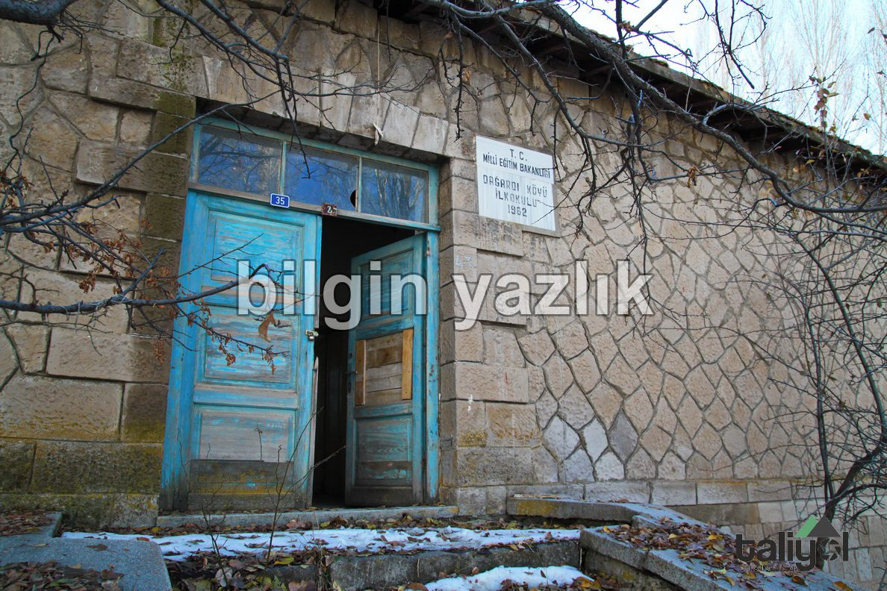
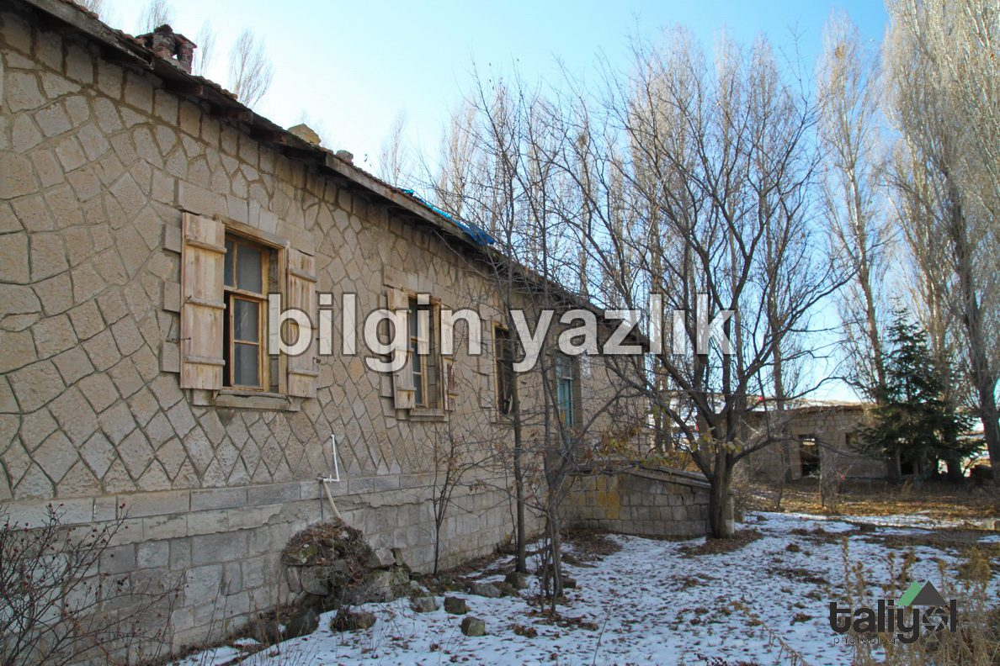
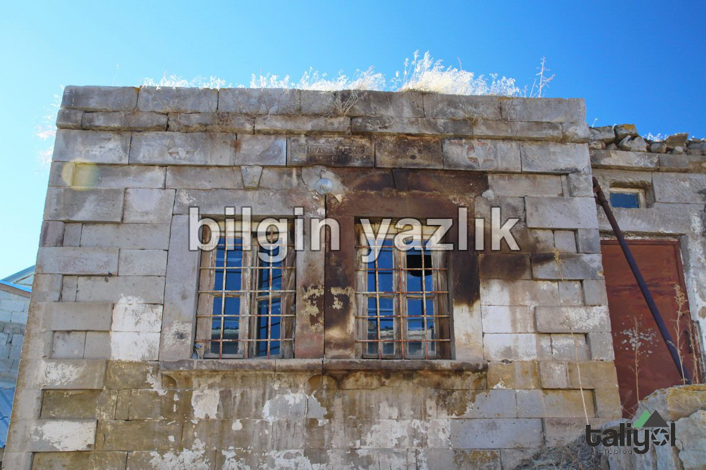
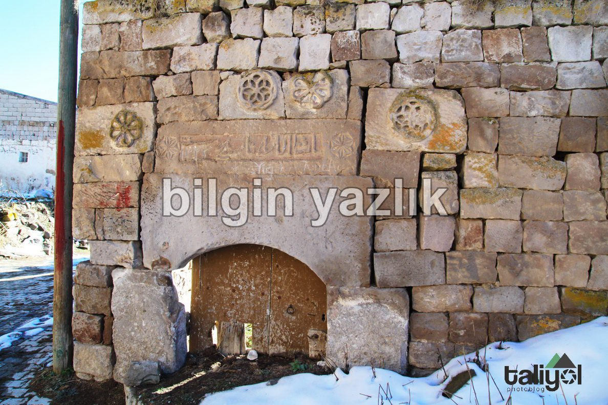
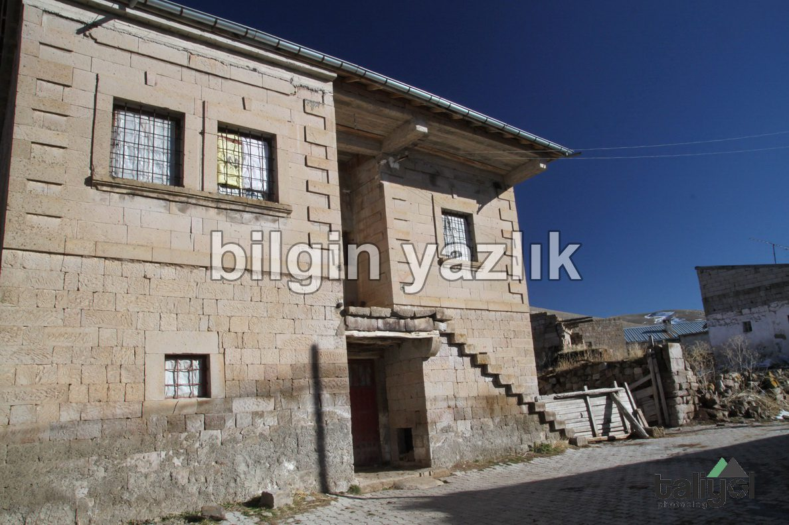
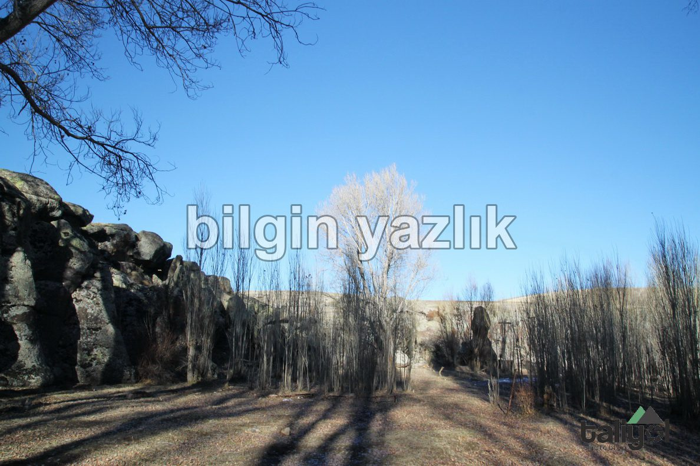
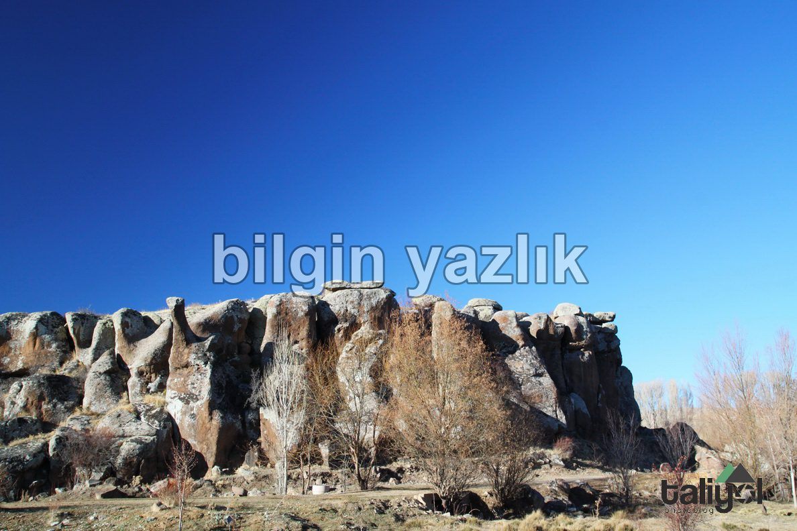
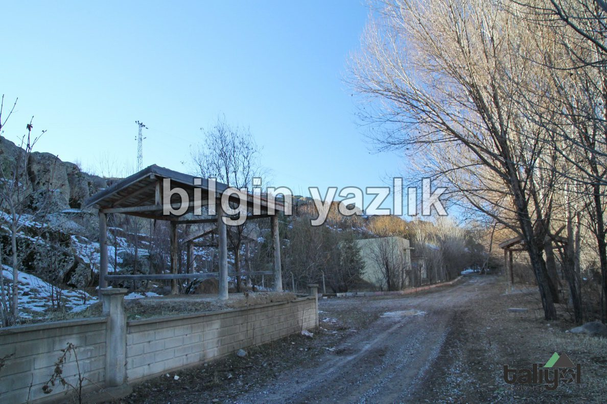
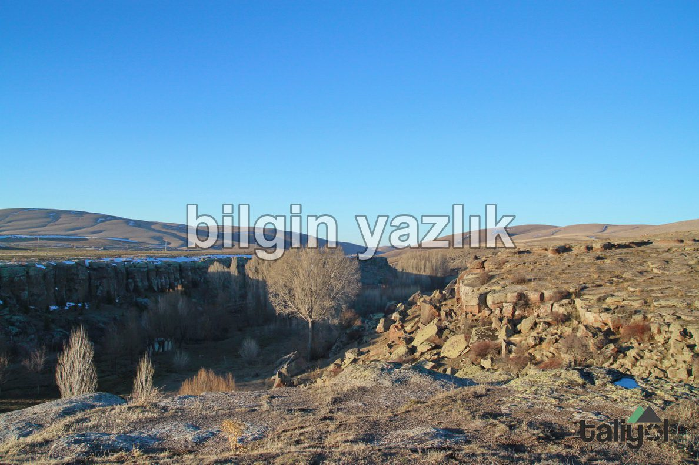

Dağardı Köyü ve Kayratın Vadisi
Kayseri’nin doğusunda 1.700 m rakımda kurulu bulunan bu eski köy, taş evleri ve bozulmamış mimarisiyle göz dolduruyor.
Köyün nüfusu yaz aylarında artarken kışın 4-5 evden başkasının bacası tütmüyor.
Köyün içerisinde bulunan okul uzun zamandır kullanılmadığı için harap durumda.
Dağardı Köyü, Güllüce Köyüne oldukça yakın ve ana yol köyün içerisinden geçiyor.
Dağardı Köyünü gezdikten sonra Güllüce ile Bünyan arasında bulunan Kayratın Vadisini geziyoruz.
Vadi içerisinde ince bir su akıyor ve vadinin zemini sulak alan, yani bir iki metre kazınca suya ulaşılacakmış gibi bir his uyandırıyor.
Vadinin iki yakası ilginç şekilli kayalar ile çevrili ve çok sayıda içme suyu kaynağı bulunuyor.
Özellikle bahar ve yaz aylarında doyumsuz bir kamp için ideal bir alan olarak değerlendirdik.









Bu yazı taliyol arşivinden taşınmıştır. · özgün kayıt